Olivetti faces · four hundred photographs, no labels
Lecture 8 Géron Ch. 7 & 8
Applications of Machine Learning
BSc Mathematics of Artificial Intelligence · Third year
Seven lectures, and every one of them was handed the answers:
| Lecture | What the data came with |
|---|---|
| 1–2 · California housing | a price for every district |
| 3 · MNIST | a digit for every image |
| 4–5 · Titanic | a survivor flag for every passenger |
| 6–7 · CoverType | a cover type for every plot |
| 8 · Olivetti faces | nothing |
Today there is no target column. That changes what a metric can be, what a baseline is, and how you find out you were wrong.
Chapters 7 and 8 together, because the second one does not work on this data until the first one has been applied to it.
First ten minutes
10 minutes
This is the ordinary situation outside a benchmark: data is cheap, labels are not.
Supervised
Unsupervised
| Task | What it produces | Chapter |
|---|---|---|
| Dimensionality reduction | a shorter description of the same instance | 7 |
| Clustering | a group for every instance | 8 |
| Density estimation | a probability density over the space | 8 |
| Anomaly detection | a score for how unusual an instance is | 8 |
All four appear today, in that order, and the order is not arbitrary: three of them are unusable on this data until the first has been applied.
Clustering is also used for customer segmentation, search-result grouping, image segmentation, and — as here — as a preprocessing step for a supervised model that cannot afford labels.
| Quantity | Value |
|---|---|
| Photographs | 400 |
| Distinct people | 40 |
| Photographs per person | 10 |
| Pixels per photograph | 4,096 |
| The whole corpus in memory | 6.6 MB |
Flatten the 64 × 64 grid and a photograph is a vector. Every method today measures a distance between two of them.
Ten times more dimensions than points. Four hundred points cannot fill four thousand dimensions, and the first block of this lecture is about what follows from that.
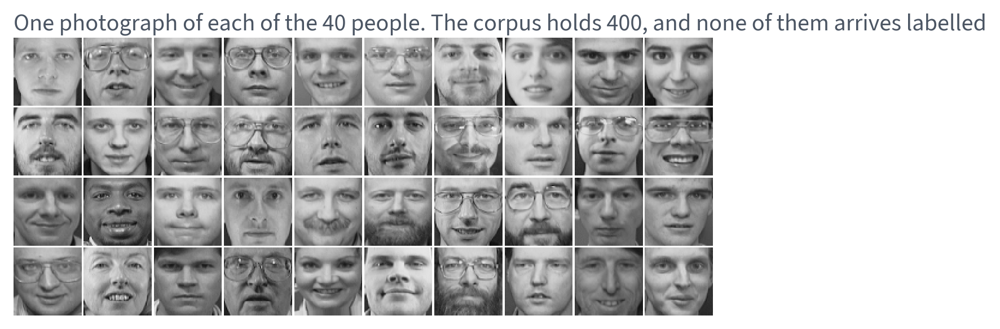
Same crop, same lighting rig, same background. What varies between rows is the person — and, as much, the lamp.
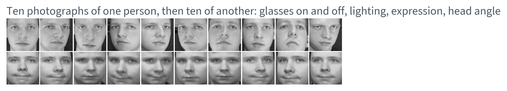
Glasses on and off, eyes shut, head turned, lit from either side. All twenty of these must end up in exactly two groups.
y exists. The brief does not have itOlivetti is a benchmark, so it ships with the identity of every photograph. The archive we are pretending to hold does not.
y is used in exactly two ways, both announced on the slide
where they happen: as the forty labels we paid for, and as an
audit, to find out what those forty could not have told us.
Any other use of y is the same error as scoring
on the test set, wearing different clothes. Slides marked audit are
results the project itself could not have computed.
k-means groups points that are close in Euclidean distance. So one measurement decides whether the hour is worth spending (an audit — it uses the hidden labels):
Are two photographs of the same person closer than two photographs of different people?
| Euclidean distance, raw pixels | Pairs | Mean | Median |
|---|---|---|---|
| Same person | 1,800 | 8.38 | 8.15 |
| Different people | 78,000 | 12.41 | 12.15 |
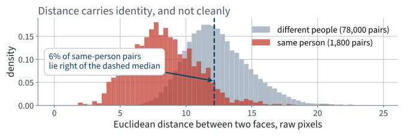
6% of same-person pairs sit further apart than the median different-person pair. Pixel distance is partly identity and partly lighting.
Moving the light source changes hundreds of pixel values by a large amount. Changing the person changes a few dozen by a small one. Euclidean distance adds them all up equally.
Measuring this costs one cell and tells you whether you are about to tune or about to hope.
One model-selection sweep — k-means at every $k$ from 2 to 60, ten restarts each, scored by silhouette:
| Step | Seconds | Cost model |
|---|---|---|
| 590 runs of Lloyd’s algorithm | 77 | $O(\text{iterations} \times m\,k\,n)$ |
| 59 silhouette scores | 2 | $O(m^{2}n)$ |
| One sweep, total | 78 | two threads, one machine |
Both cost models are linear in $n$, the number of features. Two of the three factors are properties of the problem. The third is a property of the representation.
So: how many of those 4,096 numbers are doing work — and what exactly do you lose by throwing the rest away?
The mathematics
20 minutes · examinable
Everything below is linear algebra on $\tilde{\mathbf{X}}$. There is no probability in this derivation and none is needed.
Without centring, the direction of largest $\sum_i \lVert\mathbf{w}^{\intercal}\mathbf{x}^{(i)}\rVert^2$ is essentially $\bar{\mathbf{x}}$ itself, and the first component describes nothing but “this is a photograph of a face”.
PCA centres for you. If you write the SVD
by hand it does not, and the result is a plausible-looking first component
and no error message. It is the commonest silent bug in a hand-rolled PCA.
Project each centred face onto the subspace and measure how far it had to move:
The sum of squared distances from each point to the subspace. Minimise it over all $\mathbf{W}$ with $\mathbf{W}^{\intercal}\mathbf{W} = \mathbf{I}_d$.
Note what this is not: it is not a regression, there is no $y$, and nothing here is being predicted.
$\mathbf{P} = \mathbf{W}\mathbf{W}^{\intercal}$ is an orthogonal projector, so kept and lost are orthogonal:
Summing over the $m$ faces, and noting that $\lVert\tilde{\mathbf{X}}\rVert_F^{2}$ does not depend on $\mathbf{W}$:
Minimising the error is maximising the projected variance. They are the same problem, not two related ones.
$\mathbf{C}$ is $n \times n$, symmetric and positive semi-definite; it is $m-1$ times the sample covariance matrix.
So the whole problem is: choose $d$ orthonormal directions maximising $\operatorname{tr}(\mathbf{W}^{\intercal}\mathbf{C}\mathbf{W})$.
Every remaining step is about that one quantity.
$\mathbf{U}$ and $\mathbf{V}$ orthogonal, $\boldsymbol\Sigma$ diagonal. Every real matrix has one, which is why this works on any dataset rather than on well-behaved ones. Then
The columns of $\mathbf{V}$ are the eigenvectors of $\mathbf{C}$, with eigenvalues $\sigma_j^{2}$. They are the principal components.
$\mathbf{C}$ is also the matrix Lecture 2’s normal equation had to invert, and this decomposition says exactly when it cannot be: when some $\sigma_j = 0$.
$\mathbf{V}$ is an orthogonal basis of $\mathbb{R}^n$, so any $\mathbf{W}$ can be written $\mathbf{W} = \mathbf{V}\mathbf{A}$ with $\mathbf{A}^{\intercal}\mathbf{A} = \mathbf{I}_d$. Then
where $h_j$ is the squared norm of row $j$ of $\mathbf{A}$. Orthonormal columns constrain those weights to $0 \le h_j \le 1$ with $\sum_{j} h_j = d$. The problem has become a weighted sum with exactly $d$ units of weight to spend.
Maximise $\sum_j \sigma_j^{2} h_j$ subject to $0 \le h_j \le 1$ and $\sum_j h_j = d$. The $\sigma_j^{2}$ are sorted, so the answer is immediate:
Put a full unit of weight on each of the $d$ largest $\sigma_j^2$ and nothing on the rest — that is $\mathbf{A} = \begin{bsmallmatrix}\mathbf{I}_d\\ \mathbf{0}\end{bsmallmatrix}$, which is $\mathbf{W} = \mathbf{V}_d$, the first $d$ columns of $\mathbf{V}$.
Any other allocation moves weight from a larger $\sigma_j^2$ to a smaller one, so the maximum is attained and no other subspace can beat it.
Substituting into step 2, and using $\lVert\tilde{\mathbf{X}}\rVert_F^2 = \operatorname{tr}(\mathbf{C}) = \sum_j \sigma_j^2$:
Eckart–Young–Mirsky, in the Frobenius norm
“PCA minimises reconstruction error” is a theorem, not a slogan — and the theorem also tells you the price in advance: the tail of the spectrum, which you can read off before choosing $d$.
examinable Reproduce this from the statement of the problem.
U, S, Vt = np.linalg.svd(X - X.mean(axis=0), full_matrices=False)
d = 100
Xd = U[:, :d] * S[:d] @ Vt[:d] # the rank-d truncation
lhs = ((X_centred - Xd) ** 2).sum() # ‖X̃ − X̃_d‖²_F
rhs = (S[d:] ** 2).sum() # Σ_{j>d} σ_j²
assert abs(lhs - rhs) / rhs < 1e-5
Two sides computed by entirely different routes, agreeing to eleven significant figures. When a theorem hands you an identity, assert the identity: it is the cheapest possible test that your code is the theorem.
In scikit-learn the projection and the re-embedding are
transform and inverse_transform. The second is not
an inverse; it is the best re-embedding of a projection, and step 7 is what
“best” means there.
By step 7, the fraction of squared error removed by keeping $d$ components is exactly $\sum_{j\le d} r_j$. The ratio is not a heuristic; it is the theorem, normalised.
| Cumulative variance explained by the first… | |
|---|---|
| component alone | 23.8% |
| ten components | 65.6% |
| fifty components | 87.4% |
Cumulate to a target and read $d$ off it: 66 components reach 90%, 123 reach 95%, 260 reach 99%. The rest of this lecture runs at 123.
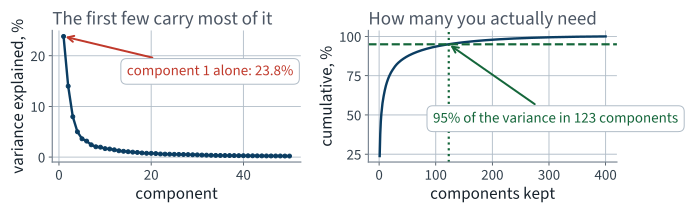
123 components hold 95% of the variance of 4,096 pixels — a factor of 33 fewer numbers per photograph.
PCA looks at the data and spends an SVD finding the best subspace. The alternative is to not look at the data at all: draw a random $\mathbf{R} \in \mathbb{R}^{n \times d}$ with independent Gaussian entries and set
This sounds absurd. It is not, and the reason is a theorem — one that says nothing whatever about the subspace being good.
For any $0 < \varepsilon < 1$ and any set of $m$ points in $\mathbb{R}^{n}$, there is a linear map $f$ into $\mathbb{R}^{d}$ with
such that for every pair of points $\mathbf{u},\mathbf{v}$,
The tolerance is on squared distances. Quoting $\varepsilon$ against unsquared ones understates the distortion by about a factor of two.
In the formula
Not in the formula
$n$
The dimension you are starting from.
400 points need the same target dimension whether they live in 4,096 dimensions or in four million.
from sklearn.random_projection import johnson_lindenstrauss_min_dim
johnson_lindenstrauss_min_dim(400, eps=0.2) # 1382
| $\varepsilon$ | 400 points | One million points |
|---|---|---|
| 0.1 | 5,135 | 11,841 |
| 0.2 | 1,382 | 3,188 |
| 0.3 | 665 | 1,535 |
| 0.5 | 287 | 663 |
Two and a half thousand times as many points costs about twice the dimension. That is the $\log m$, and it is why the theorem is interesting at all.
5,135
dimensions, to hold every pairwise distance among 400 faces to within 10% — which is more than the 4,096 we started with.
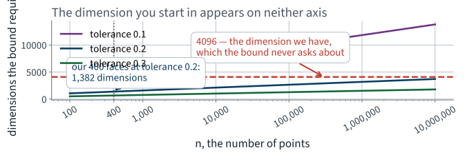
Neither axis is the original dimension. The dashed line at 4,096 is drawn only to show that the bound never asks about it.
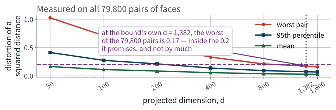
At the bound’s own $d = 1{,}382$ the worst of the 79,800 pairs is distorted by 0.17 — inside the 0.2 it promises, and not by much. The bound is loose, and not absurdly so.
The last point returns in Lecture 23, where the same concentration argument explains why unrelated embeddings on a high-dimensional sphere are very nearly orthogonal.
The method, part one
25 minutes · examinable
from sklearn.decomposition import PCA
Z = PCA(n_components=0.95, random_state=42).fit_transform(X)
print(Z.shape) # (400, 123)
n_components=0.95 — a float between 0 and
1 is read as a variance target rather than a component count,
and scikit-learn chooses $d$ for you from the cumulative ratio. Here it
chooses 123.
An integer means “this many components”; a
float means “this much variance”. One character apart, and
n_components=1 and n_components=1.0 do completely
different things.
A principal component is a vector in $\mathbb{R}^{4096}$. Reshape it to 64 × 64 and it is an image.
This is not a property of faces. It is a property of PCA: the components are directions in the input space, so whatever an input looks like, a component looks like too.
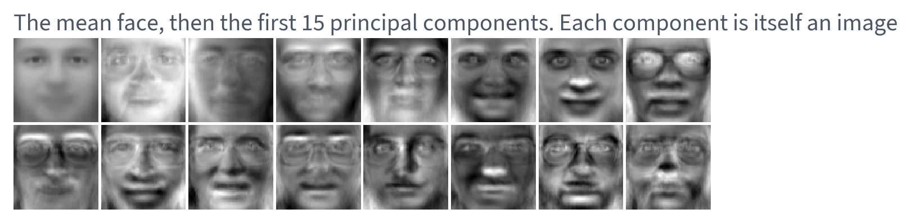
Look at the first few. They are lighting — which is exactly what the distance histogram predicted would dominate.
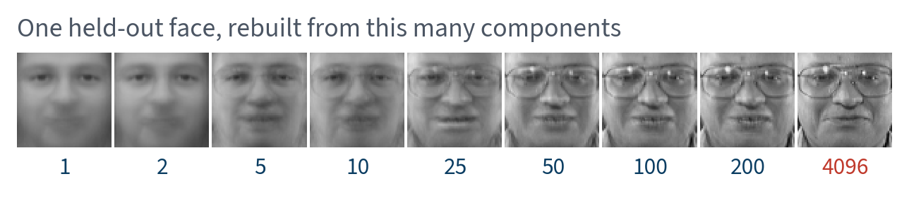
Recognisable well before 123 components. Identity survives a compression that the pixel values do not — and each PCA here was fitted on the training faces only.
| Method | What it does | When |
|---|---|---|
PCA(svd_solver="full") | the complete SVD, then truncate | small matrices; exact |
PCA(svd_solver="randomized") | approximates the top $d$ components | $d \ll \min(m,n)$ |
IncrementalPCA | one batch at a time, never holds $\mathbf{X}$ | data larger than memory |
GaussianRandomProjection | draws $\mathbf{R}$; never looks at the data | $n$ enormous, reconstruction not needed |
The default svd_solver="auto" chooses
between the first two by a size rule. That is a default you did not ask for;
print pca.svd_solver_ if a timing surprises you.
All four at $d = 123$, fitted on the 280 training faces, reconstruction error measured on the 120 held out. Times are the best of three on one machine at two threads; the error column is the one that reproduces anywhere.
| Method | Fit time, s | Held-out error |
|---|---|---|
| PCA, full SVD | 0.074 | 0.00240 |
| PCA, randomised | 0.081 | 0.00241 |
| Incremental PCA, 3 batches | 0.142 | 0.00240 |
| Random projection | 0.006 | 0.32093 |
Three PCA variants land on the same error at different prices. Random projection is essentially free and pays for it with a reconstruction error 133 times larger — a random 123-dimensional subspace of $\mathbb{R}^{4096}$ keeps only about $123/4096 = 3.0\%$ of a generic vector’s squared norm.
That is not a bug in random projection. PCA minimises exactly this column by construction; Johnson–Lindenstrauss promises something else entirely, that relative distances survive. Neither theorem is about the other quantity.
So the question is never which is better. It is whether you need the reconstruction or only the distances.
Here, PCA. 400 × 4,096 is a small matrix, and the components are interpretable images.
1. Variance is not signal. PCA keeps the directions of largest variance. If the largest variance is a nuisance — a lamp — PCA keeps the nuisance first.
2. The structure is not linear. A subspace is flat. Data on a curved manifold needs kernel PCA, LLE or a learned embedding.
3. The features are not commensurable. PCA is not scale-free: change the units of one column and the components change. Standardise first unless, as here, every feature is already the same kind of number.
Condition 1 is the one on this data, and no amount of compression repairs it — measured at the end of the lecture.
A reducer is an estimator: it is fitted. Fit it before the split and the held-out faces have helped choose the subspace they are then judged in.
pca = PCA(n_components=0.95).fit(X) # all 400 photographs
Z = pca.transform(X)
Z_tr, Z_te, y_tr, y_te = train_test_split( # the split comes after
Z, y, test_size=0.3, stratify=y, random_state=42)
The 280 training faces span at most a 280-dimensional subspace of $\mathbb{R}^{4096}$, so adding 120 more points genuinely changes which directions survive. This is not a rounding error.
| $d = 123$, 20 stratified splits | Fitted on train | Fitted on everything | Leaky wins |
|---|---|---|---|
| Reconstruction error, held out | 0.00243 | 0.00096 | 20 of 20 |
| Accuracy, held out | 97.4% | 97.4% | 3 of 20 |
The leak makes the reconstruction error look 61% better and moves the accuracy by nothing measurable.
Pipeline([("pca", PCA(0.95)), ("clf", …)]), which refits
the PCA inside every fold and makes the leak structurally impossible rather
than merely avoided.
The method, part two
20 minutes · examinable
n_init times and keep the bestn_init
changed its default between scikit-learn versions, so name it.
Convexity. The partition is a Voronoi diagram of the centroids, so every cluster is convex.
Spherical, equal-sized. The only quantity is distance to a centre.
Total assignment. Every point belongs to exactly one cluster; there is no “none of these”.
$k$ is given. Nothing in the algorithm chooses it.
The first three are dropped by DBSCAN and by Gaussian mixtures, in the last block of this lecture. The fourth — choosing $k$ — is what the rest of this section is about.
| Metric | Needs | Available here? |
|---|---|---|
| RMSE | a true value per instance | no |
| Accuracy, $F_1$, ROC AUC | a true class per instance | no |
| Inertia | nothing | yes |
| Silhouette | nothing | yes |
| Adjusted Rand index | labels — a subset is enough | on the forty |
Two of these can choose a model. One of them can be shown to a stakeholder. They are not the same one, and keeping those two jobs apart is the standing rule of this course applied where there is no test set at all.
The sum of squared distances to the assigned centroid — what k-means minimises
So “minimise inertia” selects one cluster per photograph. The elbow rule exists to work around that.
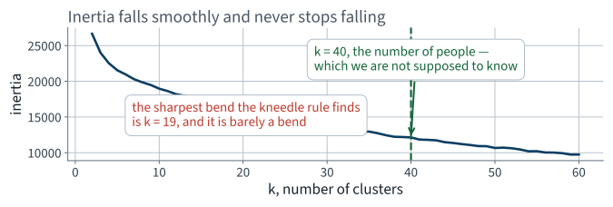
A smooth convex curve. The kneedle rule — furthest below the chord, both axes rescaled — picks $k = 19$; the archive has 40, and 46% of the inertia at $k=2$ is still present at $k=40$.
The elbow is not a criterion. It is a picture of a criterion that does not exist, and no better heuristic repairs it, because the information is not in $J$. So use one that does.
For a point $i$, let $a$ be its mean distance to the other points of its own cluster, and $b$ its mean distance to the points of the nearest other cluster.
Put every photograph in a uniformly random group, twenty times, and look at the spread. Both metrics have no natural scale, and a number with no null has no units.
| Random assignment | Silhouette | ARI on the forty |
|---|---|---|
| $k = 10$ | −0.0422 ± 0.0045 | −0.0040 ± 0.0205 |
| $k = 40$ | −0.1288 ± 0.0107 | −0.0089 ± 0.0244 |
| $k = 60$ | −0.1805 ± 0.0124 | −0.0075 ± 0.0261 |
Both anchors sit at zero, and now you know the width of the noise around zero. A silhouette of 0.02 is not a discovery.
Compare two groupings pair by pair, and count the pairs they agree about — together in both, or apart in both:
$\mathrm{RI}$ is high for free at large $k$ — almost every pair is apart in both groupings. The adjusted index subtracts what chance would give, so random scores 0 in expectation at any $k$, perfect scores 1, and negative is worse than chance.
We can compute it on the forty labelled photographs only: 780 pairs, of which just 22 are the same person. Treat it as a sanity check with a wide interval, never as a ranking.
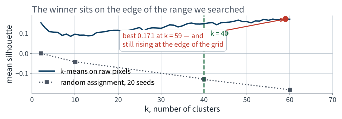
A maximum exists. It is also low, and the curve near it is nearly flat — so the chosen $k$ is not decisively better than its neighbours.
| $k$ | Silhouette | ARI on the forty | |
|---|---|---|---|
| Random assignment | 40 | −0.1288 | −0.0089 |
| The silhouette’s choice | 59 | 0.1707 | 0.3954 |
| The true $k$ — an audit | 40 | 0.1465 | 0.2978 |
Well above the anchor, so the clustering is doing something. It chose 59 groups for 40 people, and the silhouette at the truth is lower than at its own choice.
The last row is an audit: on the slide because you should see it, not because the project could have computed it.
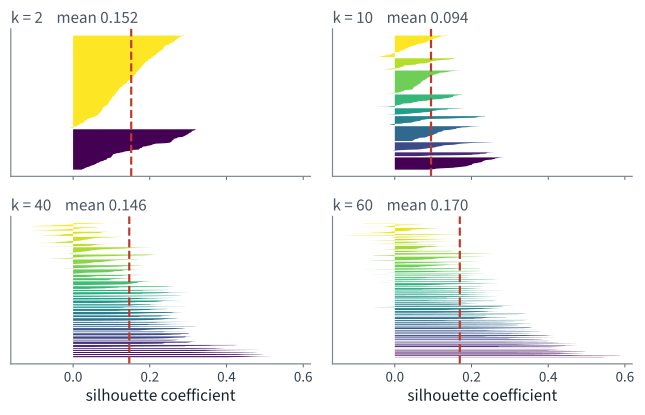
One knife per cluster: width is size, length is quality. At larger $k$ they are short and uneven.
| What you see | What it means |
|---|---|
| A knife entirely left of the dashed mean | that cluster is worse than average; consider a different $k$ |
| Knives of very unequal width | the sizes are unbalanced — one group has swallowed several |
| A knife extending into negative $s_i$ | those points are closer to another cluster than to their own |
| Every knife short | the clusters overlap; the geometry has no clean gaps |
Ours is the last row, at every $k$ we tried. That is the diagnosis the mean silhouette of 0.1707 does not contain.
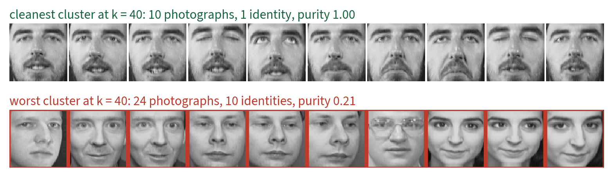
The cleanest and the worst cluster at $k=40$. The bottom row is not a person. It is a lighting condition — several different people lit and posed the same way.
| At $k = 40$, against the hidden identities | Value |
|---|---|
| Cleanest cluster: 10 photographs, purity | 1.00 |
| Worst cluster: 24 photographs of 10 people, purity | 0.21 |
| Mean purity across the forty clusters | 0.74 |
| Clusters holding exactly one person | 16 |
| Clusters with exactly ten members | 7 |
| Cluster sizes, smallest to largest | 4 to 25 |
Every true group has exactly ten members. The failure condition stated at the start of the lecture is now a measurement.
Measured: choose $k$ on a random half of the corpus, score the chosen model on the other half, twenty times.
| Silhouette, 20 random halves | Mean | sd |
|---|---|---|
| Reported — chose and scored on the same half | 0.1777 | 0.0123 |
| Held out — had no vote | 0.0878 | 0.0154 |
| Optimism | 0.0899 | 0.0229 |
Half the reported score, and worse in 20 splits out of 20. Report the held-out number, or report both.
Z = PCA(n_components=0.95, random_state=42).fit_transform(X) # 123
for k in range(2, 61):
km = KMeans(n_clusters=k, n_init=10, random_state=42).fit(Z)
sil.append(silhouette_score(Z, km.labels_))
The clustering code is unchanged. The grid is unchanged, the
seed is unchanged, n_init is unchanged. Only what k-means is
looking at changed.
One line, and both cost models lose a factor of 33 in their $n$.
| Dimensions | Sweep, seconds | Best $k$ | Silhouette | ARI, all 400 |
|---|---|---|---|---|
| 4,096 — raw pixels | 78 | 59 | 0.171 | 0.537 |
| 20 | 1.9 | 58 | 0.286 | 0.540 |
| 50 | 1.7 | 59 | 0.256 | 0.493 |
| 100 | 1.9 | 60 | 0.218 | 0.547 |
| 123 — 95% of the variance | 2.1 | 60 | 0.205 | 0.524 |
| 399 | 5.8 | 59 | 0.171 | 0.537 |
The sweep is 37 times faster at 123 dimensions, and the agreement with the true identities does not fall. The ARI column is there because a speed-up that quietly costs quality is not a speed-up.
Every second in that column is a property of one machine at two threads, and so is the ratio: run the notebook and you will measure a different speed-up, because the fixed costs do not shrink with $n$. What is a property of the method is the shape — an order-of-magnitude saving, bought at no cost in ARI.
Which is exactly why the ARI column is there. It is measured against the identities and does not depend on the representation, so it is the only column whose rows may be compared.
The general rule: never compare two scores measured on different evaluation sets — and a different representation is a different evaluation set.
Further ground
15 minutes · examinable
Every k-means cluster is still a convex Voronoi cell, every point still belongs to exactly one, and every group is still assumed to be the same size. Two methods from Chapter 8 that drop those assumptions:
| DBSCAN | Gaussian mixture | |
|---|---|---|
| Cluster shape | any connected dense region | an ellipsoid |
| Number of clusters | found, not given | given |
| Every point assigned? | no — there is a noise label | softly, with a probability |
| Main parameter | eps, a distance | n_components |
min_samples points lie within eps of iteps of each other are in the same
cluster; so are the non-core points in their neighbourhoods
db = DBSCAN(eps=6.0, min_samples=3).fit(Z)
n_clusters = len(set(db.labels_) - {-1}) # exclude the noise label
DBSCAN has no predict. It is
transductive: to label a new point you fit again, or you train a classifier on
its output.
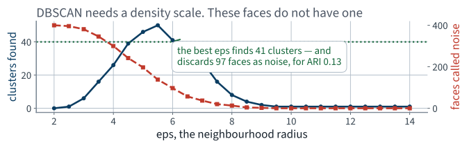
At small eps everything is noise; at
large eps everything is one cluster. The most it ever finds is
50, and never 40.
eps = 6.0, with 41 clusters and 97 of the 400 faces called
noise. Forty groups of ten faces, all lit by the same rig, have no such
scale: the gap between two people is about the gap between two photographs
of one person.
This is a real result and it belongs on the slide. A method that fails for a stateable reason is more informative than a method that was never tried.
Model the data as coming from $k$ Gaussians with unknown means, covariances and weights, fitted by expectation–maximisation:
predict_proba returns a
distribution over componentsA full covariance in $n$ dimensions has $n(n+1)/2$ free parameters.
| Setting | Free parameters |
|---|---|
| One full covariance in 4,096 dimensions | 8,390,656 |
| Forty of them | 335,626,240 |
| Estimated from | 400 photographs |
| Forty diagonal components in 123 dimensions — means, variances and weights, the whole model | 9,880 |
The first is not slow. It is undefined: every covariance estimate is singular. This is a question arithmetic settles in one line, and an afternoon of waiting does not.
covariance_type is "full",
"tied", "diag" or "spherical". We use
"diag", and that is a decision, not a default.
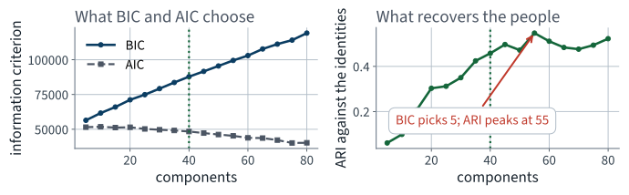
BIC picks 5 components; the ARI peaks at 55. The criterion you can compute and the answer you want are not the same function.
$p$ is the number of parameters, $m$ the number of instances, $\hat{L}$ the maximised likelihood. Both penalise complexity; BIC penalises it harder once $\log m > 2$, so it tends to choose fewer components.
By density
A Gaussian mixture is a density. Score every image and call the lowest few anomalous.
d = gmm.score_samples(Z)
bad = d < np.percentile(d, 3)
By reconstruction error
An image the eigenfaces cannot rebuild is unlike the images that built them.
R = pca.inverse_transform(pca.transform(Xa))
err = ((R - Xa) ** 2).mean(axis=1)
Test both by planting twelve corrupted images — four rotated, four dimmed, four double-exposed — and counting how many each puts in its top twelve.
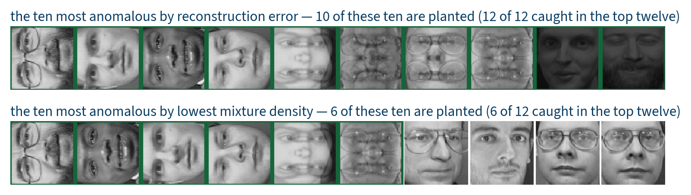
Reconstruction error caught 12 of the 12 planted images; the mixture density caught 6.
Split the corpus 280 / 120, stratified by identity. We may label forty of the 280 training photographs. Where we spend them turns out to matter more than what we do with them.
km.transform(Z).argmin(axis=0)Same classifier, same held-out faces, twenty splits. The only thing that varies is which forty were labelled.
| Labels used | Held-out accuracy | sd over 20 splits |
|---|---|---|
| 40 at random | 48.1% | 3.8% |
| 40, one per cluster | 60.5% | 4.9% |
| Propagated to the whole cluster | 55.7% | 4.7% |
| Propagated to the closest 75% | 55.1% | 4.8% |
| All 280 true labels | 97.4% | 1.6% |
Twenty splits, because the differences between the middle three rows are of the same order as their spread — and a comparison that turns on less than the spread is not a comparison.
Propagation buys 280 labels from 40 and does worse than the 40 alone, because a wrong propagated label is worse than no label. Report that, do not bury it.
Lighting dominates the distance. Two one-line repairs, on the same 400 faces, choosing $k$ by silhouette and reporting ARI exactly as before:
| Representation | Best $k$ | Silhouette | ARI, all 400 |
|---|---|---|---|
| PCA to 123 dimensions | 60 | 0.205 | 0.524 |
| PCA 123, first 3 components discarded | 60 | 0.184 | 0.508 |
| Unit-norm each image, then PCA 123 | 58 | 0.189 | 0.464 |
Neither helps. The leading components carry pose and face shape as well as illumination, so removing them throws away signal with the nuisance. The remedy that does work is a face-specific representation, which is Lecture 13.
Note also what chose $k$. Sweeping $k$ and keeping the best ARI makes both repairs look like gains — because ARI is computed from the labels this whole lecture is pretending not to have.
Part 1 is two marks: one for the number, one for saying that 50,000 does not enter it.
The common wrong answer to 2 is “ten times”. The bound is logarithmic in the number of points, and that is the only reason it is a useful theorem rather than a curiosity.
not examinable
Colab mechanics, thread pinning, absolute wall-clock timings, and the
internals of fetch_olivetti_faces.
for context Also in Chapters 7 and 8 and cut for time: kernel PCA and locally linear embedding; t-SNE and UMAP, which are visualisations rather than feature maps; Bayesian Gaussian mixtures, which drive unneeded components’ weights to zero and so choose $k$ themselves; and Chapter 8’s survey of agglomerative, mean-shift, spectral and BIRCH clustering. Named because a method you did not try is not a method that failed.
n_components=0.95 to 0.99, which takes $d$
from 123 to 260. The sweep slows by roughly the ratio of the two, and the
ARI barely moves — which is the whole trade-off in one edit.
01 · What machine learning is, and how we will work
03 · Classification and its metrics
05 · Regularisation and the bias–variance trade-off
07 · Ensembles and random forests
08 · Dimensionality reduction and unsupervised learning
09 · Neural networks, from the perceptron up
14 · Detection and segmentation
18 · Attention and transformers
19 · Information retrieval: the lexical foundation
20 · Information retrieval: dense retrieval
21 · Recommender systems: from ratings to factors
22 · Recommender systems: neural, and evaluated honestly
23 · Vision transformers and multimodal retrieval
24 · Generation, retrieval-augmented systems, and where this leaves you
| Topic | Chapter |
|---|---|
| The curse of dimensionality; projection and manifolds | 7 |
| PCA, explained variance ratio, choosing the number of dimensions | 7 |
| Randomised PCA, incremental PCA | 7 |
| Random projection and the Johnson–Lindenstrauss bound | 7 |
| Locally linear embedding and other techniques | 7 |
| k-means, inertia, the silhouette; limits of k-means; DBSCAN | 8 |
| Gaussian mixtures, EM, BIC and AIC, anomaly detection | 8 |
| Clustering for semi-supervised learning and label propagation | 8 |
Not presented — for afterwards
five, in the style of the written paper
Solutions on Lecture 9’s deck.
Solutions on Lecture 9’s deck.
The five set at the end of Lecture 7
not part of this lecture
1. For $n$ predictors each of variance $\sigma^2$ and pairwise correlation $\rho$, the variance of their average…
It tends to $\rho\sigma^2$ — correlation, not ensemble size, sets the floor.
2. Extra-trees are usually faster to fit than a random forest and often no less accurate. Give the mechanism, in…
Random split thresholds lower $\rho$, which lowers the floor.
3. You set bootstrap=False and oob_score=True. State what happens and why.
It raises: with no bootstrap there are no out-of-bag rows.
4. Impurity-based feature importance ranks a random decoy column above several real ones. Explain how that can…
A high-cardinality column offers more split points, so it accumulates impurity decrease by chance. Use permutation importance.
5. A forest improves accuracy over one tree by far less than the variance reduction would suggest. Is this a…
No — variance is only one term of the error.
Lecture 9 · Géron Ch. 9
The perceptron, what it can and cannot separate
The multilayer perceptron, and why a stack of linear layers is a linear model
What a layer computes, in matrix form, with the shapes tracked
Run the Lecture 8 notebook first